Background
GOV.UK is the official website in the United Kingdom for both citizens and non-citizens to locate information about life in the UK.
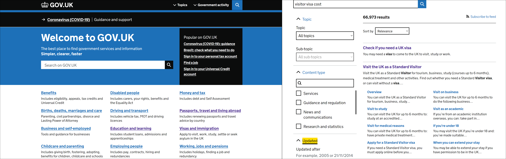
Throughout the years it has gone through many design overhauls, as recently as 2021 in fact. However, I still felt there was some more that could be done to improve the user experience.
The challenge
To find a way to improve upon a recent ideation of the website whilst abiding by the strict accessiblity guidelines that government sites should adhere to.
Discovery
I conducted user surveys, interviews and usability tests to discover frictions points and dissatisfaction with the website.
I assigned two tasks for the users to complete. I chose them based on what I assumed might be common searches for either a UK citizen or a visitor. The tasks were:
60% of users said they had no issue with performing the tasks assigned to them in the usability tests. The other 40% gave the following feedback:
I then did a comparative analysis to see how other world governments structured their websites, focusing on the layout of the topics and the search function.
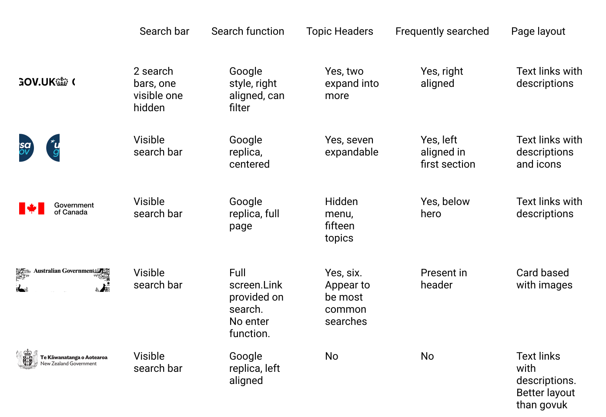
From my exploration I picked out certain features that I thought could be a solution to Gov UK's issues:
Define
I created user personas, user empathy maps, and user journey maps. These served as a reference for my design phase later on.

Design - Homepage
Through my research into the website I had found that they had two design systems (an outdated version and a current version) on the website. However, when performing accessibility checks and interaction design on the website I noticed that some colours were inconsistent. I rectified these issues when replicating their design system.
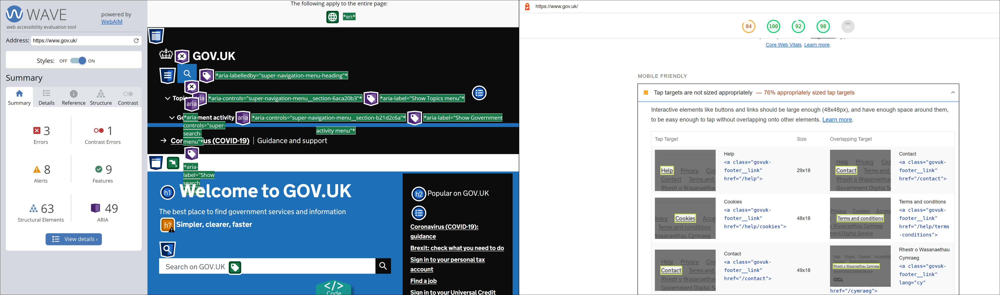
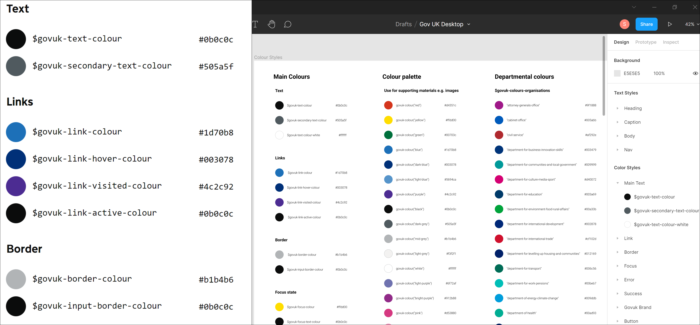
I drafted various lo-fi and mid-fi takes on the homepage to see what would work and performed A/B tests with users to see which version was preferred.
For my search bar A/B test, left aligned was preferred over center aligned.
I also tested search bar position on the page, bringing it down to above the topics. This was abandoned on the realisation that users might get confused that this search was for topics only, not government activity.
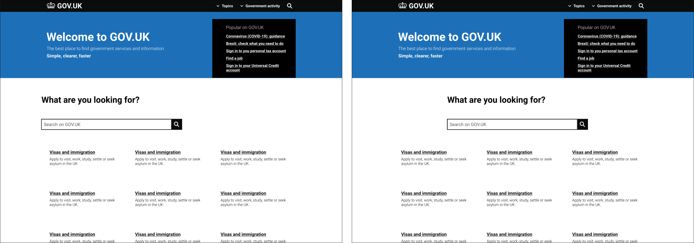
I resolved to retain the search bar's original position in the banner, however I removed the shifting effect when searching from the nav bar on the homepage in order to negate cognitive load on the user.
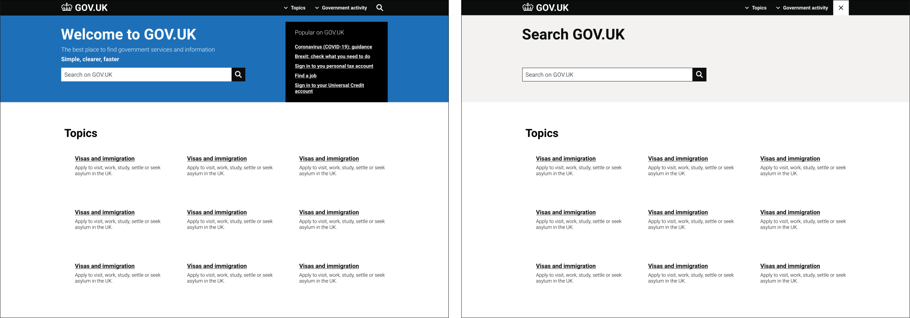
I labelled the topic section as this was missing from the official site and although I wanted to use a card based format based on the Australian website, I ran into issues as the text beneath each topic was inconsistent in length. Though this format helped separate each topic from eachother, the text looked cramped.
Another problem was that the black text didn't match the design system style guide of using blue for clickable links.
Instead, I emulated the New Zealand website's topic style and A/B tested both ideations with users to ensure I'd made the right decision.
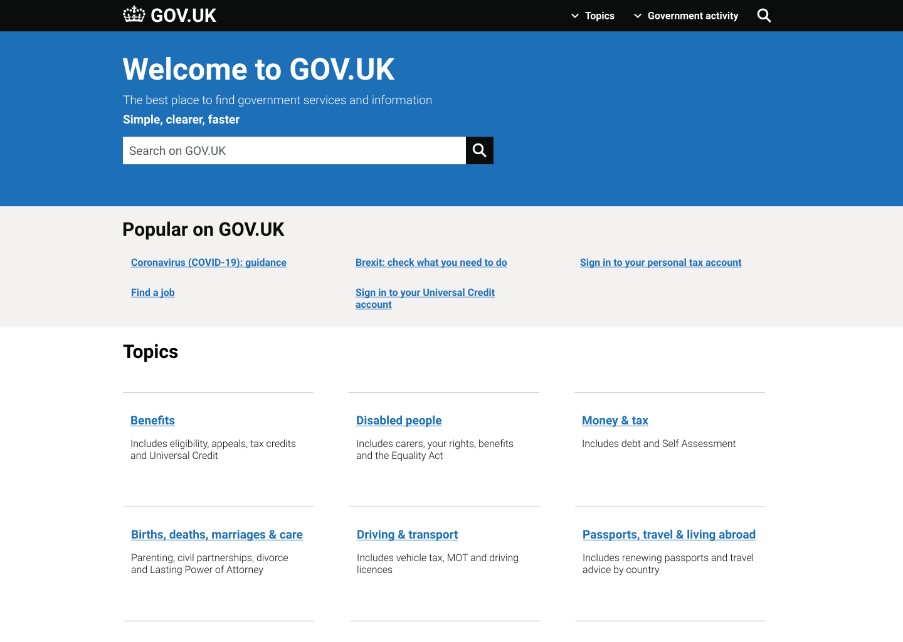
The position of the 'Popular on GOV.UK' box looked awkward and out of place (and also didn't follow the aforementioned link colour rule) so I brought it down to below the banner and changed the text colour to blue.
Design - Queries
As users felt that the website was 'too wordy', a search result offering up tens of thousands of results wasn't practical. Due to the enormity of Gov UK I couldn't approach it in the same way the Australian search does so I took inspiration from Google.
With simple queries, Google provides the answer at the top of the page in a large font size. I thought that this would be a clean and minimalistic method of doing a search.
In my design I included an option to perform an advanced search, links to related pages and a feedback field below the search to generate data to improve future searches and designs.
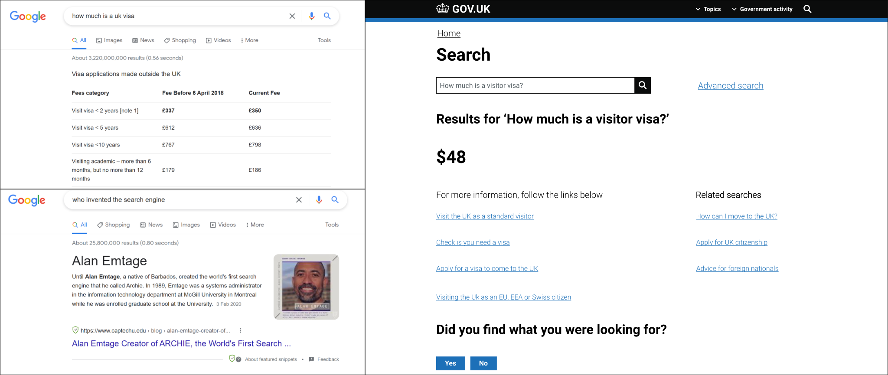
However, a search that seems as simple as the price of a visa isn't quite so.
The current method of finding out the price of a visa is to go to each specific visa's page and view the price after reading through a whole page of information. However, a user won't know the name of the visa they're looking for and there are a variety of different ones.
I decided to use the method the website uses for checking which council a user's postcode belongs to and for checking if one needs a visa to enter the UK.
I felt it was more practical to provide answers to the user through a series of questions that narrow down the options ultimating resulting in showing the visa type, price and additional information they might need.
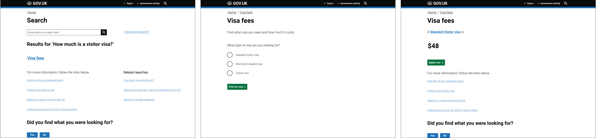
Utilising this method meant there was consistency with other areas of the website. It also meant that the result could be narrowed down through the user answering questions rather than a complex algorithm.
Results
Upon conducting user feedback and usability tests, participants commented that the homepage had a cleaner look that was more spaced out than the original site.
They also gave positive feedback on how the search results appeared and how much quicker it was to find the information they were looking for without having to read through endless text.
I realised afterwards when looking at the price of the visa, users would need to specify which country they are from in order to see the price in their currency. So I added this into the task flow diagram and final design.
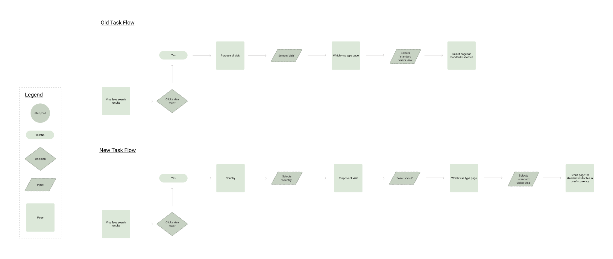
Final design
Key takeaways
Accessibility constraints play a huge role in desiging the citizen experience. Due to the expansiveness of both the website and the types of people who might use the website, there were only so many improvements I could make without affecting usability for people who might have trouble otherwise.
I believe the improvements I made to the 'search for visa fees' user flow are contigent on a development team giving the okay on whether it is feasible to employ throughout the entire site, especially when it consists of over half a million pages.
Although my solution may not work for all of the flows a user might take on the website, if it can alleviate the frustrations of certain user flows it is a viable amendment. Perhaps for simpler searches that have definitive answers, my initial solution emulating Google could work.
Update*
Since I completed my project, GOV UK updated their website. Three of my suggested amendments made their way onto the official website.
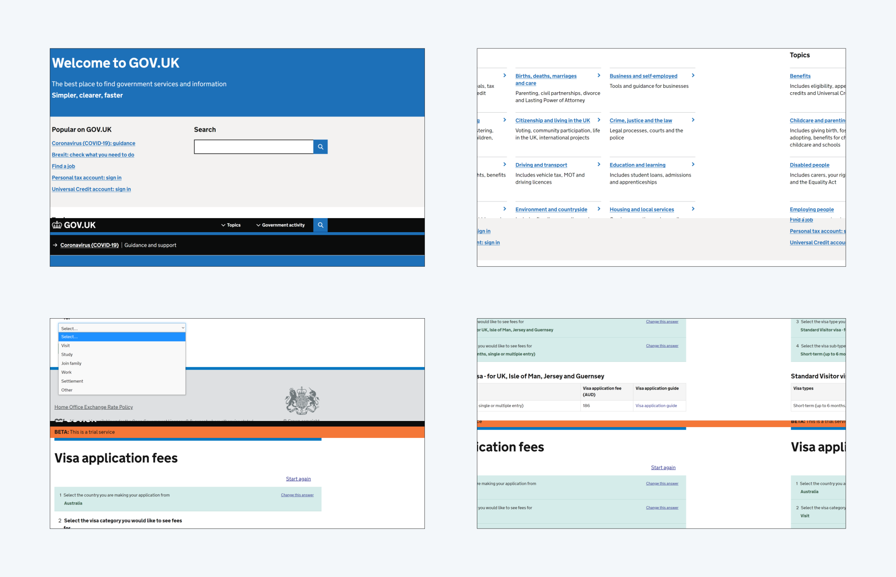
This validates my case study as being both feasible and viable. I'm surprised how identical their redesign of the topics is to mine.